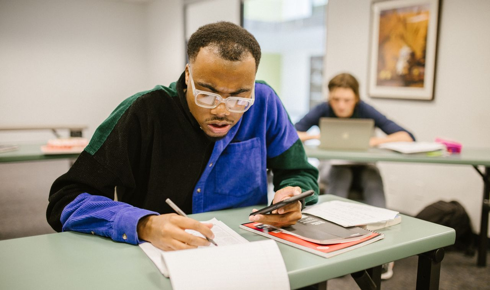

Préparer le bac de maths : méthode et planning
L'épreuve de spécialité maths a un coefficient élevé et un programme dense. La bonne nouvelle : c'est une épreuve qui se prépare et dont les questions sont prévisibles. Avec de la méthode et de l'anticipation, on transforme l'angoisse en plan d'action — voici lequel.
À retenir
- La spécialité maths a un coefficient 16 : très rentable à travailler.
- Travaillez par chapitres, régulièrement, et entraînez-vous sur les annales.
- Soignez la rédaction : ce sont des points faciles à gagner.
Pourquoi la spé maths se travaille toute l'année
Avec un coefficient de 16, la spécialité maths pèse lourd dans la note du bac : c'est l'une des matières les plus « rentables » à travailler. Mais c'est aussi une matière d'automatismes : on ne « révise » pas les maths comme on révise l'histoire. Les réflexes (dériver, étudier une suite, mener un calcul d'intégrale) se construisent par la répétition étalée dans le temps. D'où la première règle.
Règle n°1 : commencer tôt, par petites touches
La pire stratégie est le bachotage de dernière minute. Mieux vaut 2 à 3 séances courtes par semaine dès le début d'année que des marathons inefficaces en juin. C'est la même logique de régularité qui aide aussi à reprendre confiance et à réduire le stress.
Règle n°2 : travailler par chapitres, avec une boucle efficace
Reprenez chaque grand chapitre (suites, fonctions et dérivation, exponentielle, logarithme, intégrales, probabilités, géométrie dans l'espace) avec la même méthode en trois temps :
- relire le cours et refaire les démonstrations exigibles (elles tombent régulièrement) ;
- refaire seul les exercices types corrigés en classe ;
- s'attaquer à des exercices nouveaux, sans modèle sous les yeux — c'est là qu'on apprend vraiment.
Règle n°3 : les annales, votre meilleur allié
Rien ne remplace les sujets des années précédentes. Faites-les en conditions réelles (chronomètre, sans corrigé), puis analysez vos erreurs. Vous constaterez vite que les mêmes types de questions reviennent : étude de fonction, suite récurrente, lois de probabilité, géométrie dans l'espace. L'épreuve devient prévisible — donc beaucoup moins stressante.
Règle n°4 : soigner la rédaction (des points faciles)
Au bac, des points se perdent non pas sur le raisonnement mais sur la rédaction : justifier chaque étape, citer le théorème utilisé, écrire une conclusion claire. Le barème valorise la démarche. C'est un réflexe qui s'entraîne et qui rapporte gros, y compris quand le calcul final n'aboutit pas.
Un planning réaliste sur l'année
- Sept. → janv. : suivre le cours de près, traiter chaque chapitre avec la boucle ci-dessus, ne laisser aucune incompréhension s'installer.
- Févr. → avril : enchaîner les exercices d'annales par thème, consolider les chapitres faibles.
- Dernières semaines : annales complètes chronométrées + relecture de la « fiche erreurs ». Et préparer le Grand Oral si le sujet touche aux maths.
Astuce de prof : tenez une « fiche erreurs » où vous notez chaque faute récurrente (signe oublié, domaine de définition, mauvaise dérivée). La relire avant un devoir vaut souvent dix exercices de plus.
Le jour J
Lisez tout le sujet avant de commencer, repérez les exercices que vous maîtrisez et commencez par eux pour sécuriser des points et se mettre en confiance. Gérez le temps (un œil sur l'horloge), rédigez proprement, et gardez dix minutes de relecture à la fin.
Questions fréquentes
Quand commencer à réviser le bac de maths ?
Le plus tôt possible, par petites touches régulières dès le début de la terminale. Les automatismes se construisent dans la durée, pas en quelques jours.
Comment réviser efficacement les maths ?
Pour chaque chapitre : relire le cours et refaire les démonstrations, refaire seul les exercices types, puis traiter des exercices nouveaux et des annales chronométrées.
Quel est le coefficient de la spécialité maths ?
Il est élevé (16 pour l'épreuve terminale), ce qui en fait un levier majeur de la note finale : la travailler est très rentable.
Source officielle : education.gouv.fr (épreuves et coefficients du baccalauréat général ; la spécialité maths a un coefficient 16). Informations vérifiées en juin 2026.
Une préparation au bac sur-mesure
J'accompagne les élèves de terminale à Versailles et alentours pour structurer leurs révisions. Premier cours gratuit.
Me contacter